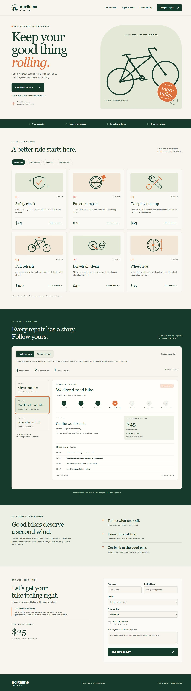
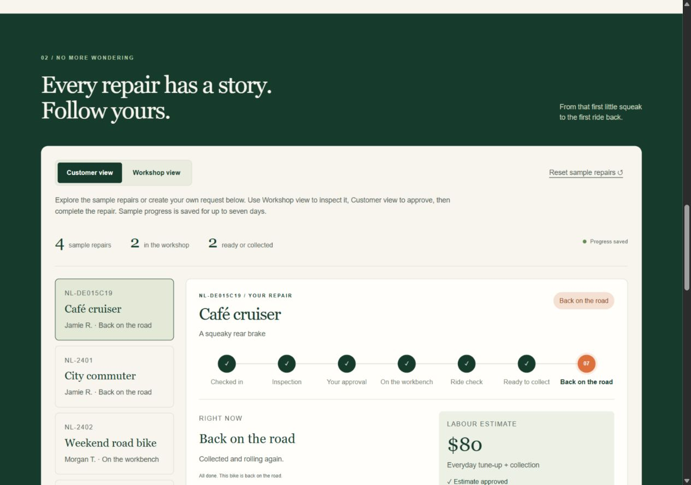
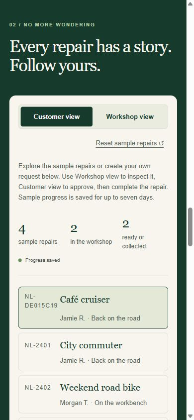
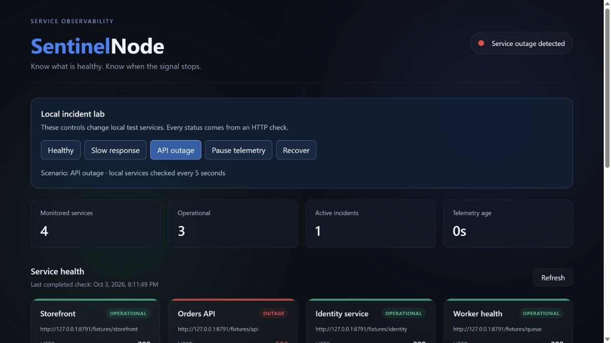

Keep the work connected.
Custom dashboards, customer records, estimates, scheduling and staff tools. Put the steps and information in one usable workflow.
See the workshop application ↗Web applications · Business workflows · Automation
I’m Devin. I build custom web applications, dashboards and integrations that help people run their work.
From customer requests and staff tools to connected data and automated checks. Practical business experience shapes what I build.
What I can help with
Build a new tool, connect existing systems, or improve a workflow people already use.
Custom dashboards, customer records, estimates, scheduling and staff tools. Put the steps and information in one usable workflow.
See the workshop application ↗API connections, data imports, monitoring and repeatable background tasks, with clear status and a way to recover when something fails.
See monitoring in practice ↗Responsive business websites and application interfaces, from navigation and forms to search, useful feedback and mobile interactions.
Discuss your project ↗01 / Selected work
Each project demonstrates a different part of the work I can take on.
A repair-management application connecting customer intake, itemized estimates, scheduling, parts reservations and collection. A public website, protected staff workspace and separate demo serve different audiences.
Self-directed project · Fictional workshop · Separate demo workspace for each visitor.

Request → itemized estimate → approval → schedule & parts → repair → collection.
Connect pricing, stock and workshop progress while keeping internal staff information separate from customer updates.
Try the separate workshop demo to follow estimates, scheduling and stock through a repair. Repeatable workflow and browser checks are available in the repository.
Inspect the checks ↗Customers approve a specific estimate version and follow their repair. Staff manage work dates, stock reservations and repair history without exposing their internal notes.
The public customer site and protected workshop have separate access. The demonstration uses sample records in visitor workspaces; competing updates and interrupted requests have explicit recovery paths.
Read the project story ↗

A monitoring application that turns HTTP checks into actionable incidents, recovery history and notification delivery. It demonstrates Python automation and operational tools that retain their state through interruptions.
Self-directed project · A working single-operator app for your computer or server, with a separate local demo. Live AWS operation remains unverified.

Configure → check → investigate → recover → export. Saved notes and delivery attempts survive a restart.
When telemetry stops, mark the observation as unknown and suppress misleading health counts.
Run the packaged application, follow a recorded incident in the lab, or inspect the checks for service failures, retries, persistence and recovery.
Inspect the checks ↗Add and edit services, pause checks, and investigate failures. Acknowledgement records your response; a healthy check confirms recovery. Incident notes remain. Failed webhook delivery has a separate journal and deliberate retry action. Guided setup keeps advanced options optional. Inspect exact response times with the chart’s pointer or keyboard controls. The demo exercises the same application against loopback services.
The portable Python app retains configuration and history in SQLite, exports observations, and restores database backups with monitoring paused for inspection. Administration stays on loopback. The screenshots show the original incident lab; the quick browser replay uses its recorded evidence. The separate AWS path remains unverified in live operation.
A nationwide job-discovery application that brings employer feeds, saved searches and application progress into one workspace. It demonstrates data integration and persistent account workflows.
Self-directed application · Locally verified · Private source · Public hosting pending.

Discover → save or compare → track → return to your workspace.
Build source-quality and ingestion controls alongside the job seeker's experience, with durable checkpoints and private account data.
Real provider imports, private workspaces and resumable background work. The case study explains the architecture, verified behavior and remaining operational work.
Review verification & status ↗More of my work
Additional project experience broadens the picture beyond the three featured applications.
A React and Express interface with searchable catalogs, a browser-local library, viewing progress and API orchestration. This adds consumer-facing interface and integration work to the portfolio.
Private project · Selected interface and integration experience.
A multi-page venue website with distinct pages for events, specials, pool and visitor information, alongside content-management workflows. The focus is clear navigation and useful business content.
Website and content-management work · Selected project experience.
02 / How I work
The screen, the underlying behavior, and what happens when things go wrong.
Interfaces should lead somewhere useful. Northline connects a request to its estimate, progress, and history through a persistent API.
Sentinel distinguishes a failed service from a missing monitoring signal. Northline handles interrupted requests and conflicting updates.
Document setup, check the important paths, and preserve results. The featured work includes project stories and verification records, with public source where it is available.
Experience & working together
I started doing small paid computer repairs for family and friends in 2009. At Inkjet Express, my experience included customer support, commercial accounts, purchasing, vendor coordination and inventory.
That background helps me ask useful questions about the work behind a screen: what staff need to know, what customers are waiting for, and what happens when a process gets stuck. My application work brings that thinking into interfaces, integrations and automation.
Tell me about the workflow, the systems involved and what you want to improve.
Visit my Upwork profile ↗Review my experience and selected projects, then explore the technical evidence on GitHub.
Read my experience profile ↗